- Home
- Output
- Quick render
- Use this button to switch between Advanced and Simple settings within Photograph setup.
- When the camera is in the correct position, you can use the Preview button to generate a quick render. This render has much lower resolution than the normal render button
- Use this button to create a full resolution render.
- By clicking the arrow, you can choose or browse for a picture that will be used as a watermark.
- Select one of the nine squares for positioning the watermark on the render.
- This slider can be used to scale the size of the watermark.
- Change the transparency of the watermark with this slider.

Quick render
How to create nice pictures in CSA.
Part of CSA BasicAdvanced rendering is done in Photo Lab. To open Photo Lab, go to "Rendering Tools" and click on the Photo Lab icon. A new window will open with Photo Lab
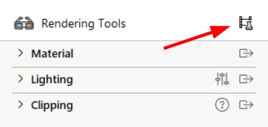
On the left side of the screen in Photo Lab, Photograph setup can be found. Here you can set quality size, lighting and other settings for rendering. Some important settings will be explained in another section
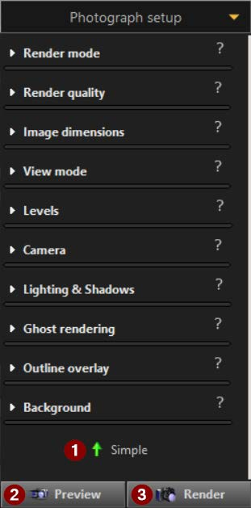
After a render is created, a new render can be made by clicking on the “New” button on the bottom left corner of the screen. Now you are able to move the camera position again to make a new render.
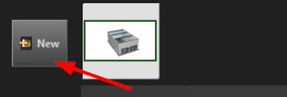
Photograph setup settings
On the left side of the screen in Photo Lab, the Photograph setup can be found. Here the render settings can be changed. Render setting presets can be saved in Photo Lab when in Advanced mode by clicking on the orange arrow next to Photograph setup. A dropdown menu opens where “Add custom preset” can be selected. Give your preset a name and click on OK. Your custom preset can now be found in Simple mode and can be used for future renders.
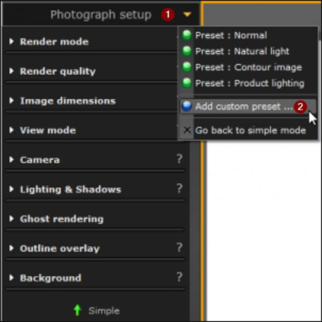
Custom presets can also be shared with others. The folder with the saved presets can be found by clicking the “open custom presets folder” after opening the pulldown menu again. The files in this folder can be shared with others, also preset files from others can be pasted in this folder.
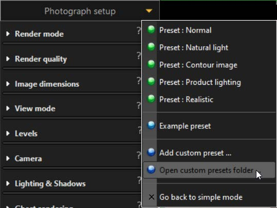
Here are a few important settings which can be found in Advanced mode to enhance the rendering results even more.
Render qualityWhen there is a lot of noise in the final render, turn the “Denoising” on to reduce the noise. It will result in a longer render time.
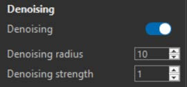
Turn the “PBR materials” on to make fully use of the PBR materials in CET, this setting will make the materials in renders more realistic at the expense of a longer render time.
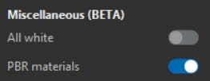
Image dimensionsClick on the arrow next to the current image dimension to change the dimension for rendering. Choose one of the selected dimensions or choose a custom dimension at the bottom of the pulldown menu. The number of pixels which is a result of the chosen dimension has a big influence on the rendering time.
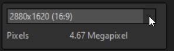
Outline overlayTurn the “Outline overlay” on to make lines and corners more pronounced in renders. This setting makes it possible to change the opacity and Line thickness during Post processing of the render image. The outline overlay can be turned off in the Post processing when necessary.
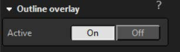
Post processing setting
On the right side of the screen in Photo Lab, the Post processing can be found. Just like the Photograph setup settings, there is a button on the bottom to switch between Simple and Advanced mode. The post processing can only be performed on rendered images. Check the white boxes next to the setting to make the setting active. To finetune the settings open them by clicking on the white arrow next to the setting. Custom post processing presets can be saved by clicking on the orange arrow (1). Now a pulldown menu will open, click on “Add custom preset …” (2) and enter a name to save the custom preset. Now the custom preset will show up in simple mode for the next renders.
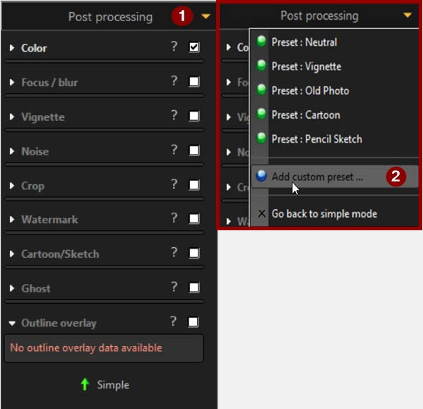
Custom presets can also be shared with others. The folder with the saved presets can be found by clicking the “open custom presets folder” after opening the pulldown menu again. The files in this folder can be shared with others, also preset files from others can be pasted in this folder.
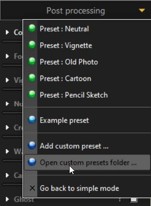
Here are some important settings which can be found in Advanced mode to enhance the rendering results even more.
WatermarkCheck the box to add a watermark over the rendered image. The numbered settings are explained below.
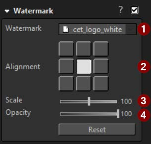
Outline overlayTurn the “Outline overlay” on to make lines and corners more pronounced in renders. This setting makes it possible to change the opacity and Line thickness during Post processing of the render image. The outline overlay can be turned off in the Post processing when necessary.
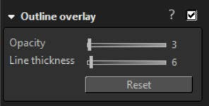
In the picture below the effect of the Outline overlay is displayed. In the picture with the Outline overlay turned on, the opacity is set on value of 10 and the line thickness is set on a value of 11. The effect of the Outline overlay can best be seen on the pallet, where the different layers of wood can be seen.
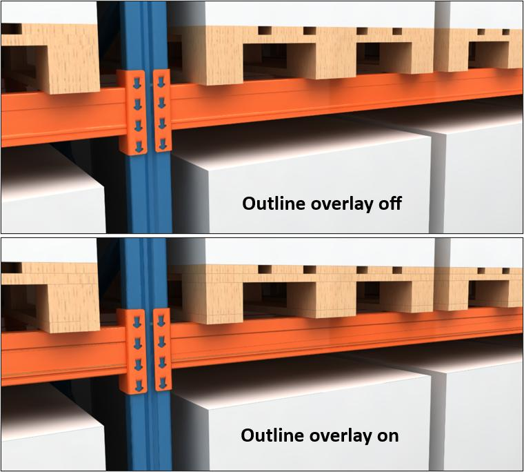